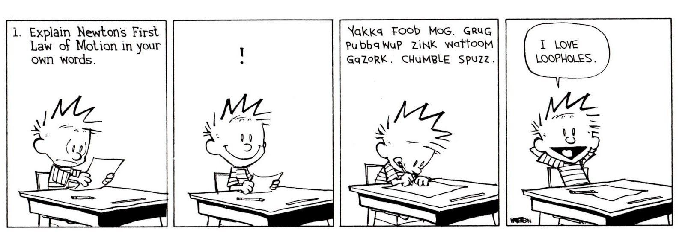

You stop contributing when you stop learning
June 5, 2019
I wrote an article a couple of weeks ago about prioritization and understanding goals in a broader context. A big part of remaining goal oriented while navigating a complex problem or project, is being able to learn quickly and getting okay with not knowing.
Get Comfortable Not Knowing
At the beginning of any project, anticipating there will be problems you don't yet know how to solve allows you to approach all tasks — even the ones you're familiar with — flexibly and with less discouragement as you progress. Often, relearning a task you're familiar with provides quicker or more efficient solutions to problems you didn't anticipate. Better implementation of a familiar component in many cases will compensate for deficiencies elsewhere.
The faster you are willing to say, "I don't know", the faster your team can start on a path toward a solution. Being willing to say, "I don't know" quickly is crucial to project success.
Be Patient With Yourself
When you hit a roadblock, the "right" place to start is often unknowable until long after you understand what you were fixing in the first place. Setting a target for where you're trying to grow understanding is important, but allow for the possibility that you will spend time unwittingly distracted by something that has the appearance of necessity. Plenty of things learned will be found later to have been irrelevant to solving the initial problem.
A helpful guardrail for navigating a new landscape and avoiding the "will learning this matter, later?" questions, is seeking out access to mentors and peers who have struggled through similar problems before — prioritize working with them.
The Difference Between Knowing Enough and The Bare Minimum
As you're tackling a new concept, it's important to emphasize understating enough. Enough and the bare minimum are not the same — the bare minimum is about foregoing necessary understanding of a topic to implement short-term solutions with the false appearance of completion — enough is about building a solid base of understanding with the intent of furthering growth in the future. It's important to spend a reasonable amount of time resource when solving the immediate problem. Understanding enough becomes more important when the path to deeper understanding later is dependent on 'just getting in the door'.
Learning Doesn't Stop
Getting comfortable saying, "I don’t know" quickly allows for flexibility as you navigate complex problems. The belief that you can 'arrive' to complete understanding is often discouraging and limiting — rarely is full understanding attainable. As we work through things unfamiliar allow yourself the freedom to embrace what you don't know.